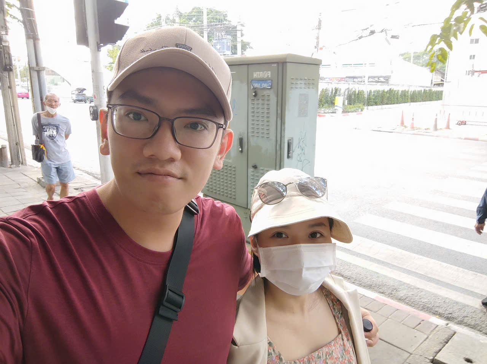

Senior DevOps / SRE / Platform Engineer
Making infrastructure reliable, scalable, and boring — in the best way.
I'm a Senior DevOps Engineer with ~6 years of hands-on cloud & infrastructure experience and ~9 years across IT/platform/infra. I've built CI pipelines for automotive R&D at LG, shipped serverless architectures on AWS, and managed hybrid on-prem + cloud environments.
I care about making infrastructure reliable, automated, and boring (in the best way). When I'm not wrangling containers or writing Terraform, you'll find me smashing shuttlecocks on the badminton court, binge-watching anime, or hunting down the best local street food.
Currently open to new opportunities — especially remote-first roles where async communication and written culture are the default.
Senior Research Engineer — DevOps / CI Infrastructure
DevOps Engineer — Client Delivery
Infrastructure Engineer
System Administrator
IT Specialist
System Integration Engineer
Open-source projects demonstrating real-world DevOps & security practices
Full-stack SRE on AWS EKS — VictoriaMetrics, OpenTelemetry, Vector, AI-driven incident remediation via MCP, Pulumi IaC
Production-grade SRE platform — AI-powered incident triage via custom MCP server, SLI/SLO burn-rate alerts, GitOps delivery
6 security scanning tools integrated into CI/CD — Trivy, Checkov, Bandit, Gitleaks, Semgrep, pip-audit
Azure integration workflow with Terraform IaC, CI/CD pipeline, and automated infrastructure provisioning
Serverless API with dual OIDC CI/CD (GitHub Actions + Bitbucket Pipelines) and AWS CDK TypeScript
6 CloudFormation stacks with SSM, GitLab OIDC, cfn-guard policy-as-code validation
AKS cluster with ACR, Azure Monitor, Defender for Containers, and Azure Policy — Terraform IaC
Because life isn't all YAML and Terraform
My go-to sport — nothing clears the head like a good smash after debugging all day
From Studio Ghibli to Christopher Nolan — love both animated worlds and live-action storytelling
Exploring new places, soaking up different cultures, and getting lost on purpose
Love trying dishes I haven't had before — regional Vietnamese food, international cuisines, street food from different countries
Open to remote DevOps/SRE opportunities and interesting conversations